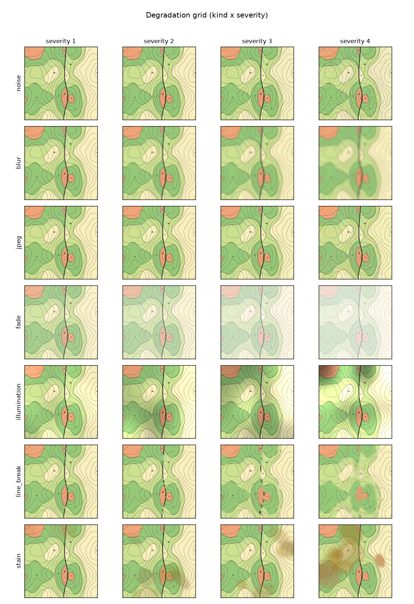
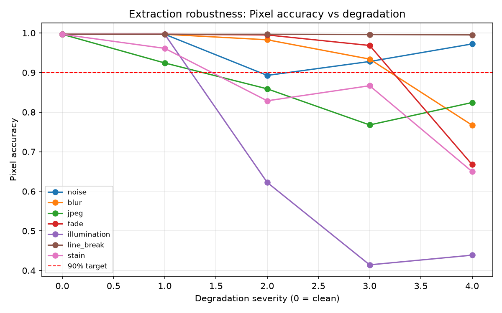

第 0 步 · 输入：一张栅格地质图
合成基准 base 场景（有像素级真值可以打分）：彩色地层 + 黑色界线 + 粗断层线 + 虚线等高线 + 河流/注记/产状符号干扰。右图是它对应的真值剖面（褶皱 + 正断层）。


基于平面地质图的智能化三维构建 · 兰州大学大创项目 · 流程：矢量化 → 数据库 → 三维建模 → 应用扩展
合成基准 base 场景（有像素级真值可以打分）：彩色地层 + 黑色界线 + 粗断层线 + 虚线等高线 + 河流/注记/产状符号干扰。右图是它对应的真值剖面（褶皱 + 正断层）。
自动分区分割（准确率 99.67%）→ 接触线折线化 + 断层候选（蓝粗线，待人工确认）→ 虚线等高线成链（编号供人工赋高程）→ 插值 DEM。


接触线+DEM+产状+剖面深部拾取 → surface_points / orientations → 隐式插值。左：模型算出的剖面（对比第 0 步真值剖面）；右：模型反推的地表地质图（对比输入图）。


在建好的体素模型上任意查询——申报书承诺的三项应用扩展。


教学图幅 2：K 系列不整合覆盖古生界 + 点线等高线（人工赋 37 条高程）+ 一条被正确"否决"的伪断层候选（其实是剖面线 A–B）。产状全部由 V 字法则自动估算。


7 种扫描退化 × 4 档强度的系统扫描。轻度退化（正常扫描质量）下全部类型准确率 ≥92%；红虚线为申报书 90% 考核线。

